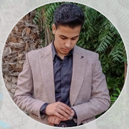

Professional Summary: Senior Recruiter specializing in full-cycle talent acquisition, proactive sourcing, and building diverse talent pipelines. Skilled at partnering with hiring managers to design strategic hiring plans that improve time-to-fill and quality of hire while delivering a standout candidate experience and driving recruitment process improvements.
Profile: Senior Recruiter at Talent Synk with expertise in full-cycle talent acquisition and a proven ability to match high-caliber candidates to organizational needs. Strong communicator who delivers exceptional candidate experience while efficiently managing priorities and driving recruitment process improvements.
Educational Integration: Dedicated Primary and Secondary English Teacher with a strong foundation in educational methodologies. Passionate about fostering student engagement, developing comprehensive lesson plans, and delivering high-quality English language instruction (including phonetics, literature, and grammar) to diverse age groups. I believe in making learning engaging, fun, and accessible for everyone.
Hire Me
In this role at Talent Synk, focus is on identifying and attracting top talent to meet diverse recruitment needs. Key responsibilities include managing the full recruitment cycle, from sourcing to onboarding, while maintaining a strong candidate experience. Collaborating with hiring managers to understand their needs and providing strategic input for talent acquisition. The role emphasizes effective communication and time management to ensure timely fulfillment of positions.
Instructing primary and secondary students in English language arts, focusing on reading comprehension, writing, grammar, and literature. Developing comprehensive, age-appropriate lesson plans, evaluating individual student progress, and maintaining effective classroom management to ensure a highly productive and supportive learning environment.
Helping young students build confidence and fluency in speaking and listening through interactive and engaging daily conversation practice tailored to their age group.
Simplifying complex grammar rules and expanding vocabulary using fun methods to help students write and speak with absolute precision.
Providing structured lessons aligned with primary and middle school academic standards to help students achieve top grades in their school examinations.
Institution: Faculty of Education, Benha University
Equipped with modern teaching methodologies, child educational psychology, and a deep understanding of English literature and linguistics to effectively teach younger generations.
+201551304993
ahmedabdelrady912007@gmail.com
Tant aljazeera 13741, Toukh, Qalubia, Egypt
(طنط الجزيرة، مركز طوخ، محافظة القليوبية)